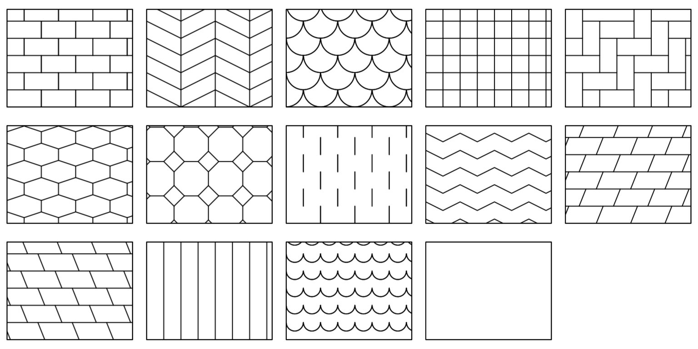

fill_pattern_names lists the base pattern names. Any pattern given to
fill_pattern() or scale_fill_pattern() begins with one of these,
optionally followed by modifiers (see the "Pattern Names" section of
fill_pattern()).
Details
fill_pattern_order lists the patterns that numbers map to:
pattern = i draws fill_pattern_order[(i - 1) %% 35 + 1]. The default
scale_fill_pattern(patterns = seq_len) uses them in this order.
Examples
library(grid)
library(fillpattern)
fill_pattern_names
#> [1] "brick" "chevron" "fish" "grid" "herringbone"
#> [6] "hexagon" "octagon" "rain" "saw" "shingle"
#> [11] "rshingle" "stripe" "wave" "empty"
head(fill_pattern_order)
#> [1] "brick" "fish" "stripe45" "hexagon" "shingle45" "wave135"
# These are equivalent.
fill <- fill_pattern(3)
fill <- fill_pattern(fill_pattern_order[3])
# One rectangle per base pattern.
grid.newpage()
fills <- fill_pattern(fill_pattern_names, bg = "white")
for (i in seq_along(fills))
grid.rect(
x = ((i - 1) %% 5 + 0.5) / 5,
y = 1 - ((i - 1) %/% 5 + 0.5) / 3,
width = 0.18,
height = 0.28,
gp = gpar(fill = fills[[i]]) )
